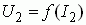

СОДЕРЖАНИЕ ОТЧЕТА
1. Наименование и цель работы
2. Электрические схемы испытания трансформатора, вычерченные в соответствии с ГОСТ.
3. Паспортные данные трансформатора.
4. Перечень измерительных приборов.
5. Расчёт параметров модели трансформатора.
6. Результаты измерений и расчётов, сведенные в табл. 18.2, табл. 18.3 и табл. 18.4.
7. Упрощенная схема замещения нагруженного трансформатора, его векторные диаграммы при нагрузках R, L и C и графики внешних характеристик .
8. Выводы по работе.